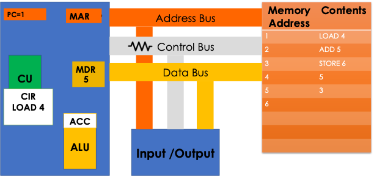

CPU, Buses & FDE Cycle – Notes
Main CPU Components
- Control Unit (CU) – decodes instructions and sends signals to control how data moves around the CPU and memory.
- Arithmetic Logic Unit (ALU) – carries out calculations and logical comparisons (e.g. greater than, less than).
- Clock – a signal to synchronise tasks. A clock cycle is known as a tick. Each cycle has a high state and a low state. For each tick of the clock the CPU can process one or more instructions. The more clock ticks there are, the faster instructions can be processed.
CPU Registers
Registers are very fast, small memory locations inside the CPU used as temporary stores for instructions and data being processed.
- Program Counter (PC) – keeps track of where the CPU is in the program, points to the next instruction in the cycle.
- Memory Address Register (MAR) – holds the address of the instruction or data to be fetched.
- Memory Data Register (MDR) – stores the instruction or data that has been fetched from memory.
- Accumulator (ACC) – stores the most recent result of processing.
Buses
Buses are the communication pathways that carry data, addresses and control signals around the computer.
- Address bus – carries memory addresses, uni-directional (from CPU to memory).
- Data bus – carries instructions and data, bi-directional (to and from the CPU).
- Control bus – carries commands from the CPU and status messages from devices, bi-directional.

Fetch–Decode–Execute (FDE) Cycle
The fetch–decode–execute cycle is the process the CPU uses to run programs:
- Fetch: The address of the next instruction is held in the PC. This address is copied to the MAR. The address bus carries it to main memory. The control bus sends a read signal, and the instruction is transferred along the data bus into the MDR.
- Decode: The CU decodes the instruction in the MDR, working out which circuits are needed.
- Execute: The instruction is carried out (e.g. ALU performs a calculation, a value is loaded/stored, a jump occurs). The PC is updated to point to the next instruction.

Embedded Systems
An embedded system is a computer system that is part of a larger device and performs a dedicated function.
- Usually has a small processor, limited memory and simple input/output.
- Examples: washing machines, microwave ovens, robotic vacuum cleaners, car engine management systems.
- Often uses firmware – software stored in ROM.